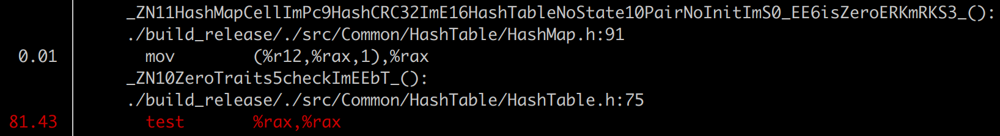
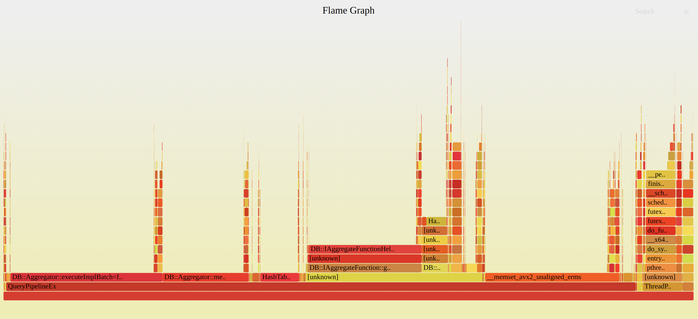
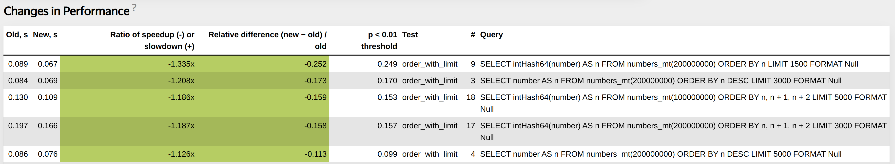
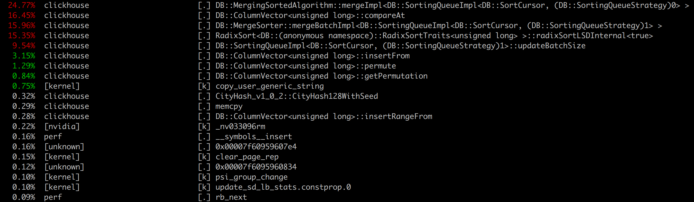

Performance Tests ClickHouse

Maksim, database management systems developer.
1. Performance optimization basics.
2. Low-level optimizations.
3. Abstractions and Algorithms.
4. Tools.
5. Examples.
6. Sorting.
CI/CD Pipeline.
Performance Tests.
Introspection.
Libraries.
Latency numbers.
My presentation from CPP Russia 2022 ClickHouse performance optimization practices:
CI/CD Pipeline is required.
The more checks the better.
Functional, Integration tests. Fuzzers.
Performance tests.
Run all tests with all available sanitizers (ASAN, MSAN, UBSAN, TSAN).
Project specific tests. Example: custom stress tests, Jepsen tests.
Must be able to report about performance changes (improvement or regression).
Collect different statistics during each performance test run. Can be useful for later debugging:
1. Processor metrics (CPU cycles, cache misses same as perf-stat).
2. Project specific profile events (read bytes from disk, transferred bytes over network, etc).
Write test in special XML configuration.
<test>
<substitutions>
<substitution>
<name>func</name>
<values>
bitCount
bitNot
abs
...
</values>
</substitution>
<substitution>
<name>expr</name>
<values>
<value>number</value>
<value>toUInt32(number)</value>
...
</values>
</substitution>
</substitutions>
<query>SELECT {func}({expr}) FROM numbers(100000000) FORMAT Null</query>
</test>
It is not trivial to implement infrastructure for performance testing.
https://clickhouse.com/blog/testing-the-performance-of-click-house/
Helps find performance regressions.
Tool that can help to find places where performance can be improved:
1. Try different allocators, different libraries.
2. Try different compiler options (loop unrolling, inline threshold)
3. Enable AVX/AVX2/AVX512 for build.
Ideally collect as much information as possible in user space.
Important to check if something is improved because of your change, or to understand why there is some degradation.
Can be used as additional statistics that are collected during performance tests.
RealTimeMicroseconds, UserTimeMicroseconds, SystemTimeMicroseconds, SoftPageFaults, HardPageFaults using getrusage system call.
Collect :taskstats from procFS (Also support Netlink interface).
OSCPUVirtualTimeMicroseconds, OSCPUWaitMicroseconds (when /proc/thread-self/schedstat is available). OSIOWaitMicroseconds (when /proc/thread-self/stat is available). OSReadChars, OSWriteChars, OSReadBytes, OSWriteBytes (when /proc/thread-self/io is available)
Project specific profile events (read bytes from disk, transferred bytes over network, etc).
SELECT PE.Names AS ProfileEventName, PE.Values AS ProfileEventValue
FROM system.query_log ARRAY JOIN ProfileEvents AS PE
WHERE query_id='344b07d9-9d7a-48f0-a17e-6f5f6f3d61f5'
AND ProfileEventName LIKE 'Perf%';
┌─ProfileEventName─────────────┬─ProfileEventValue─┐
│ PerfCpuCycles │ 40496995274 │
│ PerfInstructions │ 57259199973 │
│ PerfCacheReferences │ 2072274618 │
│ PerfCacheMisses │ 146570206 │
│ PerfBranchInstructions │ 8675194991 │
│ PerfBranchMisses │ 259531879 │
│ PerfStalledCyclesFrontend │ 813419527 │
│ PerfStalledCyclesBackend │ 15797162832 │
│ PerfCpuClock │ 10587371854 │
│ PerfTaskClock │ 10587382785 │
│ PerfContextSwitches │ 3009 │
│ PerfCpuMigrations │ 113 │
│ PerfMinEnabledTime │ 10584952104 │
│ PerfMinEnabledRunningTime │ 4348089512 │
│ PerfDataTLBReferences │ 465992961 │
│ PerfDataTLBMisses │ 5149603 │
│ PerfInstructionTLBReferences │ 1344998 │
│ PerfInstructionTLBMisses │ 181635 │
└──────────────────────────────┴───────────────────┘
Reusing existing libraries can significantly improve overall performance. In ClickHouse there are external libraries for:
1. Different algorithms for parsing floats, json (multiple libraries).
2. A lot of integrations.
3. Embedded storages.
4. LLVM for JIT compilation.
5. libcxx (C++ standard library).
One of the easiest method to try to improve something is to reuse generic components with components from highly optimized library:
1. Abseil. Example: Replace std::unordered_map with absl::flat_hash_map if you do not need pointer stability.
2. Folly.
3. Boost.
Do not use outdated libraries.
Latency Comparison Numbers ---------------------------------- L1 cache reference 0.5 ns Branch mispredict 5 ns L2 cache reference 7 ns 14x L1 cache Mutex lock/unlock 25 ns Main memory reference 100 ns 20x L2 cache, 200x L1 cache Compress 1K bytes with Zippy 3,000 ns 3 us Send 1K bytes over 1 Gbps network 10,000 ns 10 us Read 4K randomly from SSD* 150,000 ns 150 us ~1GB/sec SSD Read 1 MB sequentially from memory 250,000 ns 250 us Round trip within same datacenter 500,000 ns 500 us
void plus(int64_t * __restrict a,
int64_t * __restrict b,
int64_t * __restrict c,
size_t size)
{
for (size_t i = 0; i < size; ++i) {
c[i] = b[i] + a[i];
}
}
If there is no __restrict modifier specified for pointers, the compiler may not vectorize the loop.
Or it will vectorize the loop but put a couple of runtime checks at the beginning of the function to make sure that the arrays do not overlap.
Compile program with AVX2 instruction set and -fno-unroll-loops.
$ /usr/bin/clang++-15 -mavx2 -fno-unroll-loops -O3 -S vectorization_example.cpp
In the final assembly, there are two loops. Vectorized loop that processes 4 elements at a time:
.LBB0_4: # =>This Inner Loop Header: Depth=1
vmovdqu (%rdi,%rax,8), %ymm0
vpaddq (%rsi,%rax,8), %ymm0, %ymm0
vmovdqu %ymm0, (%rdx,%rax,8)
addq $4, %rax
cmpq %rax, %r8
jne .LBB0_4
Scalar loop:
LBB0_6: # =>This Inner Loop Header: Depth=1
movq (%rdi,%r8,8), %rax
addq (%rsi,%r8,8), %rax
movq %rax, (%rdx,%r8,8)
incq %r8
cmpq %r8, %rcx
jne .LBB0_6
Additionally, if we compile this example without -fno-unroll-loops and look at the generated loop, we will see that compiler unrolled vectorized loop, which now processes 16 elements at a time.
.LBB0_4: # =>This Inner Loop Header: Depth=1
vmovdqu (%rdi,%rax,8), %ymm0
vmovdqu 32(%rdi,%rax,8), %ymm1
vmovdqu 64(%rdi,%rax,8), %ymm2
vmovdqu 96(%rdi,%rax,8), %ymm3
vpaddq (%rsi,%rax,8), %ymm0, %ymm0
vpaddq 32(%rsi,%rax,8), %ymm1, %ymm1
vpaddq 64(%rsi,%rax,8), %ymm2, %ymm2
vpaddq 96(%rsi,%rax,8), %ymm3, %ymm3
vmovdqu %ymm0, (%rdx,%rax,8)
vmovdqu %ymm1, 32(%rdx,%rax,8)
vmovdqu %ymm2, 64(%rdx,%rax,8)
vmovdqu %ymm3, 96(%rdx,%rax,8)
addq $16, %rax
cmpq %rax, %r8
jne .LBB0_4
There is a very useful tool that can help you identify places where the compiler does or does not perform vectorization to avoid assembly checking.
You can add -Rpass=loop-vectorize, -Rpass-missed=loop-vectorize and -Rpass-analysis=loop-vectorize options to clang. There are similar options for gcc.
$ /usr/bin/clang++-15 -mavx2 -Rpass=loop-vectorize -Rpass-missed=loop-vectorize
-Rpass-analysis=loop-vectorize -O3
vectorization_example.cpp:7:5: remark: vectorized loop (vectorization width: 4,
interleaved count: 4) [-Rpass=loop-vectorize]
for (size_t i = 0; i < size; ++i) {
class SumFunction
{
public:
void sumIf(int64_t * values, int8_t * filter, size_t size);
int64_t sum = 0;
};
void SumFunction::sumIf(int64_t * values, int8_t * filter, size_t size)
{
for (size_t i = 0; i < size; ++i) {
sum += filter[i] ? 0 : values[i];
}
}
/usr/bin/clang++-15 -mavx2 -O3 -Rpass-analysis=loop-vectorize -Rpass=loop-vectorize
-Rpass-missed=loop-vectorize -c vectorization_example.cpp
vectorization_example.cpp:31:13: remark: loop not vectorized: unsafe dependent
memory operations in loop. Use #pragma loop distribute(enable) to allow loop
distribution to attempt to isolate the offending operations into a separate loop
Unknown data dependence. Memory location is the same as accessed at
vectorization_example.cpp:31:13 [-Rpass-analysis=loop-vectorize]
sum += filter[i] ? 0 : values[i];
vectorization_example.cpp:28:9: remark: loop not vectorized
[-Rpass-missed=loop-vectorize]
for (size_t i = 0; i < size; ++i) {
Make local sum inside sumIf function:
class SumFunction
{
public:
void sumIf(int64_t * values, int8_t * filter, size_t size);
int64_t sum = 0;
};
void SumFunction::sumIf(int64_t * values, int8_t * filter, size_t size)
{
int64_t local_sum = 0;
for (size_t i = 0; i < size; ++i) {
local_sum += filter[i] ? 0 : values[i];
}
sum += local_sum;
}
/usr/bin/clang++-15 -mavx2 -O3 -Rpass-analysis=loop-vectorize -Rpass=loop-vectorize
-Rpass-missed=loop-vectorize -c vectorization_example.cpp
vectorization_example.cpp:31:5: remark: vectorized loop (vectorization width: 4,
interleaved count: 4) [-Rpass=loop-vectorize]
for (size_t i = 0; i < size; ++i) {
.LBB0_5: # =>This Inner Loop Header: Depth=1
vmovd (%rdx,%rax), %xmm5 # xmm5 = mem[0],zero,zero,zero
vmovd 4(%rdx,%rax), %xmm6 # xmm6 = mem[0],zero,zero,zero
vmovd 8(%rdx,%rax), %xmm7 # xmm7 = mem[0],zero,zero,zero
vmovd 12(%rdx,%rax), %xmm1 # xmm1 = mem[0],zero,zero,zero
vpcmpeqb %xmm5, %xmm8, %xmm5
vpmovsxbq %xmm5, %ymm5
vpcmpeqb %xmm6, %xmm8, %xmm6
vpmovsxbq %xmm6, %ymm6
vpcmpeqb %xmm7, %xmm8, %xmm7
vpmovsxbq %xmm7, %ymm7
vpcmpeqb %xmm1, %xmm8, %xmm1
vpmaskmovq -96(%r8,%rax,8), %ymm5, %ymm5
vpmovsxbq %xmm1, %ymm1
vpmaskmovq -64(%r8,%rax,8), %ymm6, %ymm6
vpaddq %ymm0, %ymm5, %ymm0
vpmaskmovq -32(%r8,%rax,8), %ymm7, %ymm5
vpaddq %ymm2, %ymm6, %ymm2
vpmaskmovq (%r8,%rax,8), %ymm1, %ymm1
vpaddq %ymm3, %ymm5, %ymm3
vpaddq %ymm4, %ymm1, %ymm4
addq $16, %rax
cmpq %rax, %r9
jne .LBB0_5
Each algorithm and data structure can be tuned using different low-level optimizations:
1. Remove unnecessary copying.
2. Decrease amount of virtual function calls.
3. Tune data layout.
4. Specializations for special cases.
5. CPU dispatch.
6. JIT compilation.
For example your binary distributed only with old instruction set SSE4.2.
For AVX, AVX2, AVX512 instructions need to use runtime instructions specialization using CPUID.
It is important that compilers can vectorize even complex loops. We can rely on this.
Blog post about CPU dispatch:
JIT compilation can transform dynamic configuration into static configuration.
Not all functions can be easily compiled, not all algorithms can be easily compiled.
Has its own costs (compilation time, memory, maintenance).
But can greatly improve performance in special cases.
Blog post about JIT in ClickHouse:
For high performance systems interfaces must be determined by data structures and algorithms.
Top-down approach does not work.
High-performance system must be designed concentrating on doing at least a single task efficiently.
Designed from hardware capabilities.
There is no silver bullet, or best algorithm for any task.
Try to choose the fastest possible algorithm/algorithms for your specific task.
Performance must be evaluated on real data.
Most of the algorithms are affected by data distribution.
Real time system and per-process resource (CPU, Memory) utilization - top, htop.
CPU per-process-function - perf top.
Performance counter statistics - perf stat.
CPU Profile - FlameGraphs, perf record.
Preparing and analyzing data - clickhouse-local.
IO/Network - iostat, dstat, sar.
High CPU utilization does not mean your program is fast. There can be several reasons:
1. Program is Memory/IO bound.
2. Inneficient algorithms, data structures.
3. Excessive copying.
perf top gives high level view of what program is doing during benchmark, and which functions cost most of the CPU.
Useful to check underlying assembly and try to figure out where the problem is.
But need to be aware that CPU can just wait memory.
In aggregation benchmark if we check the hottest function assembly we will see:
Underlying code:
namespace ZeroTraits
{
template <typename T>
bool check(const T x) { return x == T{}; } /// test %rax, %rax
}
static bool isZero(const Key & key, const State & /*state*/)
{
return ZeroTraits::check(key);
}
Program is memory bound.
Useful tool to check something in isolation.
Assume you want to improve performance of some critical data structure like hash table or algorithm like sorting.
Best way to do this, is to isolate this into separate small program and benchmark it.
Lets take a look of integer hash table benchmark.
perf stat integer_hash_tables_benchmark ch_hash_map UInt64 WatchID.bin 8873898
CH HashMap:
Elapsed: 0.604 (14688324.619 elem/sec.), map size: 8871741
Performance counter stats for 'integer_hash_tables_benchmark ch_hash_map UInt64 WatchID.bin 8873898':
683.90 msec task-clock # 0.968 CPUs utilized
124 context-switches # 181.313 /sec
0 cpu-migrations # 0.000 /sec
252,549 page-faults # 369.277 K/sec
2,948,142,592 cycles # 4.311 GHz (83.10%)
286,182,948 stalled-cycles-frontend # 9.71% frontend cycles idle (83.07%)
1,276,430,369 stalled-cycles-backend # 43.30% backend cycles idle (83.35%)
2,025,692,416 instructions # 0.69 insn per cycle
# 0.63 stalled cycles per insn (83.64%)
356,845,237 branches # 521.779 M/sec (83.65%)
21,268,813 branch-misses # 5.96% of all branches (83.20%)
0.706636444 seconds time elapsed
0.479112000 seconds user
0.203622000 seconds sys
Lets take a look of integer hash table benchmark.
perf stat integer_hash_tables_benchmark std_unordered_map UInt64 WatchID.bin 8873898
std::unordered_map:
Elapsed: 2.473 (3588276.141 elem/sec.), map size: 8871741
Performance counter stats for 'integer_hash_tables_benchmark std_unordered_map UInt64 WatchID.bin
8873898':
3,262.13 msec task-clock # 0.999 CPUs utilized
317 context-switches # 97.176 /sec
1 cpu-migrations # 0.307 /sec
142,567 page-faults # 43.704 K/sec
14,343,682,708 cycles # 4.397 GHz (83.33%)
258,005,531 stalled-cycles-frontend # 1.80% frontend cycles idle (83.33%)
12,555,340,086 stalled-cycles-backend # 87.53% backend cycles idle (83.34%)
4,104,335,191 instructions # 0.29 insn per cycle
# 3.06 stalled cycles per insn (83.33%)
735,241,554 branches # 225.387 M/sec (83.33%)
10,749,318 branch-misses # 1.46% of all branches (83.33%)
3.264492212 seconds time elapsed
3.060895000 seconds user
0.199797000 seconds sys
We see that standard hash map is much slower. Lets check cache misses and cache references.
perf stat -e cache-misses,cache-references integer_hash_tables_benchmark std_unordered_map
UInt64 WatchID.bin 8873898
std::unordered_map:
Elapsed: 2.484 (3572510.427 elem/sec.), map size: 8871741
Performance counter stats for 'integer_hash_tables_benchmark std_unordered_map UInt64 WatchID.bin
8873898':
124,089,032 cache-misses # 35.893 % of all cache refs
345,719,343 cache-references
3.296088157 seconds time elapsed
3.117693000 seconds user
0.175644000 seconds sys
perf stat -e cache-misses,cache-references integer_hash_tables_benchmark ch_hash_map
UInt64 WatchID.bin 8873898
CH HashMap:
Elapsed: 0.580 (15306059.985 elem/sec.), map size: 8871741
Performance counter stats for 'integer_hash_tables_benchmark ch_hash_map UInt64 WatchID.bin
8873898':
32,774,660 cache-misses # 28.599 % of all cache refs
114,602,476 cache-references
0.654290201 seconds time elapsed
0.452424000 seconds user
0.200187000 seconds sys
ClickHouse Hash Table performs 3.8 times less cache misses.
There are a lot of additional things that you can tune to reduce perf variations. Example:
1. Bind program to specific CPUs.
2. Use tmpfs.
Can be build for CPU, Memory.
git clone https://github.com/brendangregg/FlameGraph
cd FlameGraph
perf record -F 99 -a -g or perf record -F 99 -a -g -p process_pid
perf script | ./stackcollapse-perf.pl > out.perf-folded
./flamegraph.pl out.perf-folded > perf.svg
By default perf uses frame-pointer stack unwinding, so to see all traces your program must be compiled with -fno-omit-frame-pointer.
Example of broken Flame Graph:
Use DWARF stack unwinding:
perf record -F 99 -a -g -p 32238 -g --call-graph=dwarf
I use clickhouse-local almost every day:
1. Preprocess data for benchmarks.
2. Analyze data for benchmarks.
3. Analyze benchmark results.
4. Analyze output of different tools.
Amount of non vectorized loops in ClickHouse AggregateFunctions, after compile with -Rpass=loop-vectorize, -Rpass-missed=loop-vectorize and -Rpass-analysis=loop-vectorize.
SELECT count() FROM (SELECT splitByChar(' ', line)[1] AS file_with_line
FROM file("out.txt", LineAsString)
WHERE line LIKE '%loop not vectorized%'
AND line LIKE '%ClickHouseClang/src/AggregateFunctions/%'
GROUP BY file_with_line
);
┌─count()─┐
│ 403 │
└─────────┘
Background pool produce a lot of calls to wait with timeout for Poco::NotificationQueue.
Such calls are also visible on flame graphs and for some benchmarks can take 15-20% of CPU time.
This timeout was added long time ago to avoid rare deadlock with Poco::NotificationQueue.
Solution was to replace Poco::NotificationQueue to conditional variable and queue.
INSERT INTO FUNCTION file('test_file_{_partition_id}', 'TSV',
'partition_id UInt64, value1 UInt64, value2 UInt64, value3 UInt64,
value4 UInt64, value5 UInt64') PARTITION BY partition_id
SELECT
number % 5 AS partition_id,
number,
number,
number,
number,
number
FROM numbers(100000000);
Split chunk into multiple chunks.
void PartitionedSink::consume(Chunk chunk)
{
...
std::unordered_map<String, size_t> partition_id_to_chunk_index;
IColumn::Selector chunk_row_index_to_partition_index;
for (size_t row = 0; row < chunk.getNumRows(); ++row)
{
auto value = column->getDataAt(row);
auto [it, inserted] = partition_id_to_chunk_index.emplace(value,
partition_id_to_chunk_index.size());
chunk_row_index_to_partition_index.push_back(it->second);
}
...
}
Use HashMapWithSavedHash<StringRef, size_t> instead of std::unordered_map<String, size_t>.
Store hash table and arena as class member, to reuse them between consume calls.
void PartitionedSink::consume(Chunk chunk)
{
...
size_t chunk_rows = chunk.getNumRows();
chunk_row_index_to_partition_index.resize(chunk_rows);
partition_id_to_chunk_index.clear();
for (size_t row = 0; row < chunk_rows; ++row)
{
auto partition_key = partition_by_result_column->getDataAt(row);
auto [it, inserted] = partition_id_to_chunk_index.insert(
makePairNoInit(partition_key, partition_id_to_chunk_index.size()));
if (inserted)
it->value.first = copyStringInArena(partition_keys_arena, partition_key);
chunk_row_index_to_partition_index[row] = it->getMapped();
}
...
}
INSERT INTO FUNCTION file('test_file_{_partition_id}', 'TSV',
'partition_id UInt64, value1 UInt64, value2 UInt64, value3 UInt64,
value4 UInt64, value5 UInt64') PARTITION BY partition_id
SELECT
number % 5 AS partition_id,
number,
number,
number,
number,
number
FROM numbers(100000000);
Was: 9.714 sec (10.36 million rows/s., 82.90 MB/s.)
Now: 2.868 sec (35.10 million rows/s., 280.76 MB/s.)
Assume that we have interface that provide some generic methods for working with object. For example in ClickHouse there is IColumn interface that provide a lot of methods for working with columns (filter, getPermutation, compareAt).
Sometimes we need to write complex logic that is implemented on top of such interface.
The problem is that if this logic will be implemented in terms of small virtual methods like compareAt there will be a lot of virtual function calls.
In most of the cases we use CRTP (The Curiously Reccuring Template Pattern).
Also we can use just standalone template function.
class IAggregateFunction
{
...
virtual ~IAggregateFunction() = default;
virtual void add(
AggregateDataPtr place,
const IColumn ** columns,
size_t row_num,
Arena * arena) const = 0;
virtual void addBatch(
size_t row_begin,
size_t row_end,
AggregateDataPtr * places,
size_t place_offset,
const IColumn ** columns,
Arena * arena,
ssize_t if_argument_pos = -1) const = 0;
...
}
template <typename Derived>
class IAggregateFunctionHelper : public IAggregateFunction
{
void addBatch(size_t row_begin, size_t row_end, AggregateDataPtr * places,
size_t place_offset, const IColumn ** columns, Arena * arena,
ssize_t if_argument_pos = -1) const override
{
if (if_argument_pos >= 0)
{
auto * column = columns[if_argument_pos];
const auto & flags = assert_cast<const ColumnUInt8 &>(*column).getData();
for (size_t i = row_begin; i < row_end; ++i)
{
if (flags[i] && places[i])
static_cast<const Derived *>(this)->add(places[i] + place_offset,
columns, i, arena);
}
}
{
for (size_t i = row_begin; i < row_end; ++i)
if (places[i])
static_cast<const Derived *>(this)->add(places[i] + place_offset,
columns, i, arena);
}
}
}
template <typename T, typename Derived>
class IAggregateFunctionDataHelper : public IAggregateFunctionHelper<Derived>
{
...
}
class AggregateFunctionCount final : public IAggregateFunctionDataHelper<AggregateFunctionCountData,
AggregateFunctionCount>
{
void add(AggregateDataPtr __restrict place, const IColumn **, size_t, Arena *) const override
{
++data(place).count;
}
}
class IColumn
{
...
virtual int compareAt(size_t n, size_t m, const IColumn & rhs,
int nan_direction_hint) const = 0;
virtual void compareColumn(const IColumn & rhs, size_t rhs_row_num,
PaddedPODArray<UInt64> * row_indexes,
PaddedPODArray<Int8> & compare_results,
int direction, int nan_direction_hint) const = 0;
...
}
class IColumn
{
...
protected:
template <typename Derived, bool reversed, bool use_indexes>
void compareImpl(const Derived & rhs, size_t rhs_row_num,
PaddedPODArray<UInt64> * row_indexes,
PaddedPODArray<Int8> & compare_results,
int nan_direction_hint) const;
template <typename Derived>
void doCompareColumn(const Derived & rhs, size_t rhs_row_num,
PaddedPODArray<UInt64> * row_indexes,
PaddedPODArray<Int8> & compare_results,
int direction, int nan_direction_hint) const;
...
}
template <is_decimal T>
void ColumnDecimal<T>::compareColumn(const IColumn & rhs, size_t rhs_row_num,
PaddedPODArray<UInt64> * row_indexes,
PaddedPODArray<Int8> & compare_results,
int direction, int nan_direction_hint) const
{
return this->template doCompareColumn<ColumnDecimal<T>>(
static_cast<const Self &>(rhs),
rhs_row_num,
row_indexes,
compare_results,
direction,
nan_direction_hint);
}
Compile time dispatch:
template <typename Derived>
void IColumn::doCompareColumn(const Derived & rhs, size_t rhs_row_num,
PaddedPODArray<UInt64> * row_indexes,
PaddedPODArray<Int8> & compare_results,
int direction, int nan_direction_hint) const
{
if (direction < 0)
{
if (row_indexes)
compareImpl<Derived, true, true>(rhs, rhs_row_num, row_indexes,
compare_results, nan_direction_hint);
else
compareImpl<Derived, true, false>(rhs, rhs_row_num, row_indexes,
compare_results, nan_direction_hint);
}
else
{
if (row_indexes)
compareImpl<Derived, false, true>(rhs, rhs_row_num, row_indexes,
compare_results, nan_direction_hint);
else
compareImpl<Derived, false, false>(rhs, rhs_row_num, row_indexes,
compare_results, nan_direction_hint);
}
}
template <typename Derived, bool reversed, bool use_indexes>
void IColumn::compareImpl(const Derived & rhs, size_t rhs_row_num,
PaddedPODArray<UInt64> * row_indexes [[maybe_unused]],
PaddedPODArray<Int8> & compare_results,
int nan_direction_hint) const
{
for (size_t i = 0; i < num_indexes; ++i)
{
UInt64 row = i;
if constexpr (use_indexes)
row = indexes[i];
int res = compareAt(row, rhs_row_num, rhs, nan_direction_hint);
assert(res == 1 || res == -1 || res == 0);
compare_results[row] = static_cast<Int8<(res);
if constexpr (reversed)
compare_results[row] = -compare_results[row];
if constexpr (use_indexes)
{
if (compare_results[row] == 0)
{
*next_index = row;
++next_index;
}
}
}
}
template <typename Derived, bool reversed, bool use_indexes>
void IColumn::compareImpl(const Derived & rhs, size_t rhs_row_num,
PaddedPODArray<UInt64> * row_indexes [[maybe_unused]],
PaddedPODArray<Int8> & compare_results,
int nan_direction_hint) const
{
for (size_t i = 0; i < num_indexes; ++i)
{
UInt64 row = i;
if constexpr (use_indexes)
row = indexes[i];
int res = static_cast<const Derived *>(this)->compareAt(row, rhs_row_num, rhs,
nan_direction_hint);
assert(res == 1 || res == -1 || res == 0);
compare_results[row] = static_cast<Int8<(res);
if constexpr (reversed)
compare_results[row] = -compare_results[row];
if constexpr (use_indexes)
{
if (compare_results[row] == 0)
{
*next_index = row;
++next_index;
}
}
}
}
Result performance improvements:
How Sorting in ClickHouse works. Let first take a look at pipeline:
EXPLAIN PIPELINE SELECT WatchID FROM hits_100m_single
ORDER BY WatchID, CounterID;
┌─explain──────────────────────────────────┐
│ (Expression) │
│ ExpressionTransform │
│ (Sorting) │
│ MergingSortedTransform 16 → 1 │
│ MergeSortingTransform × 16 │
│ LimitsCheckingTransform × 16 │
│ PartialSortingTransform × 16 │
│ (Expression) │
│ ExpressionTransform × 16 │
│ (SettingQuotaAndLimits) │
│ (ReadFromMergeTree) │
│ MergeTreeThread × 16 0 → 1 │
└──────────────────────────────────────────┘
In physical query plan we have multiple transform that work together to perform sorting:
PartialSortingTransform — sort single block, apply special optimization if LIMIT is specified.
MergeSortingTransform — sort multiple blocks using k-way-merge algorithm, output of this transform is a stream of sorted blocks.
MergingSortedTransform — sort multiple streams of sorted blocks using k-way-merge algorithm.
Sort of single block in PartialSortingTransform, can be performed in batch, without indirections. There is getPermutation, updatePermutaion methods in IColumn that returns or update permutation.
This permutation can later be applied efficiently to any column using permute method.
The problem is with MergeSortingTransform and MergingSortedTransform. They must perform k-way-merge algorithm, and this algorithm operates on single rows instead of columns.
In the worst case, we will apply ORDER BY WatchID, CounterID comparator to each row N * log(N) * 2 times during our MergeSortingTransform, MergingSortedTransform.
SELECT WatchID FROM hits_100m_obfuscated
ORDER BY WatchID FORMAT Null;

struct SortCursor : SortCursorHelper<SortCursor>
{
using SortCursorHelper<SortCursor>::SortCursorHelper;
/// The specified row of this cursor is greater than the specified
/// row of another cursor.
bool greaterAt(const SortCursor & rhs, size_t lhs_pos, size_t rhs_pos) const
{
for (size_t i = 0; i < impl->sort_columns_size; ++i)
{
const auto & sort_description = impl->desc[i];
int direction = sort_description.direction;
int nulls_direction = sort_description.nulls_direction;
int res = direction * impl->sort_columns[i]->compareAt(lhs_pos, rhs_pos,
*(rhs.impl->sort_columns[i]), nulls_direction);
if (res > 0)
return true;
if (res < 0)
return false;
}
return impl->order > rhs.impl->order;
}
};
Worst thing for column DBMS is to process elements in rows.
The biggest problem here is that for each column specified in the ORDER BY comparator, we call compareAt method N * log(N) * 2 times.
The most common case of sorting in databases is sorting by single column.
SELECT WatchID FROM hits_100m_obfuscated
ORDER BY WatchID FORMAT Null;
Lets write specialization.
template <typename ColumnType>
struct SpecializedSingleColumnSortCursor : SortCursorHelper<
SpecializedSingleColumnSortCursor<ColumnType>>
{
bool ALWAYS_INLINE greaterAt(
const SortCursorHelper<SpecializedSingleColumnSortCursor> & rhs,
size_t lhs_pos, size_t rhs_pos) const
{
auto & lhs_columns = this->impl->sort_columns;
auto & rhs_columns = rhs.impl->sort_columns;
const auto & lhs_column = assert_cast<const ColumnType &>(*lhs_columns[0]);
const auto & rhs_column = assert_cast<const ColumnType &>(*rhs_columns[0]);
const auto & desc = this->impl->desc[0];
int res = desc.direction * lhs_column.compareAt(lhs_pos, rhs_pos,
rhs_column, desc.nulls_direction);
if (res > 0)
return true;
if (res < 0)
return false;
return this->impl->order > rhs.impl->order;
}
};
SELECT WatchID FROM hits_100m_obfuscated
ORDER BY WatchID FORMAT Null;
Was: 5.401 sec (18.51 million rows/s., 148.11 MB/s)
Now: 4.363 sec (22.92 million rows/s., 183.35 MB/s.)
For multiple columns in comparator we applied JIT compilation.
We fused multiple compareAt methods in a single function to avoid unnecessary indirections and decrease the number of virtual function calls if multiple columns are specified in the comparator.
SELECT WatchID FROM hits_100m_single
ORDER BY WatchID, CounterID
SETTINGS compile_sort_description=0;
— 0 rows in set. Elapsed: 6.408 sec. Processed 100.00 million rows, 1.20 GB (15.60 million rows/s., 187.26 MB/s.)
SELECT WatchID FROM hits_100m_single
ORDER BY WatchID, CounterID
SETTINGS compile_sort_description=1;
— 0 rows in set. Elapsed: 5.300 sec. Processed 100.00 million rows, 1.20 GB (18.87 million rows/s., 226.40 MB/s.)
— +20% performance improvement!
Another problem with MergeSortingTransform and MergingSortedTransform and k-way-merge algorithm, is that during merge we insert only single row into our result.
During row insertion we need to perform number_of_columns virtual calls.
Maybe we can choose data structure that performs minimum amount of comparisons and can help to minimize amount of virtual calls during row insertion ?

K - number of cursors that we want to merge.
N - total number of elements that are in all cursors.
There are 3 data structures that can be used:
1. Heap. Performs around N * log(K) * 1.5 comparisons in worst case.
2. Self balansing BST (AVL, Red-Black). Performs around N * log(K) * constant_factor comparisons.
3. Tournament Tree. Performs N * log(K) comparisons in worst case.
The biggest issue with tournament tree is that this data structure always performs N * log(N) comparisons, even for low cardinality data, because all tournament must be replayed.
Theoretically tournament tree should make less comparisons for data with high cardinality. But on real data heap can avoid a lot of comparisons because next minimum cursor is still greater than current minimum cursor.
We can choose between heap and tournament tree in runtime using for example bandits approach similar to lz4 optimization, or using statistics to understand if column has high cardinality or low cardinality.
Also there are tournament tree modifications that can allow to store minimum cursor and next minimum cursor.
But for now we decided to use heap property, but improve it with batch interface.
The idea is simple, if current minimum cursor in heap is less than next minimum cursor, we compare them, until next mininum cursor is greater, each time we increase batch size.
That way we can insert multiple rows into result, if we sort data that does not have high cardinality (contains duplicates).
On real data we can see 2x-10x performance improvement, after replacing heap with batch heap.
SELECT DISTINCT Age FROM hits_100m_obfuscated;
┌─Age─┐
│ 0 │
│ 50 │
│ 31 │
│ 55 │
│ 22 │
│ 28 │
└─────
SELECT WatchID FROM hits_100m_obfuscated ORDER BY Age FORMAT Null;
Was: 4.154 sec (24.07 million rows/s., 216.64 MB/s.)
Now: 0.482 sec (207.47 million rows/s., 1.87 GB/s.)
1. CI/CD infrastructure, especially performance tests, must be the core component of a high performance system.
2. Without deep introspection it is hard to investigate issues with performance.
3. For high performance systems interfaces must be determined by algorithms and data structures.
4. Use tools to profile, benchmark and check how your program works under load.
5. Avoid virtual function calls.
6. Always evaluate algorithms and data structures on real data.